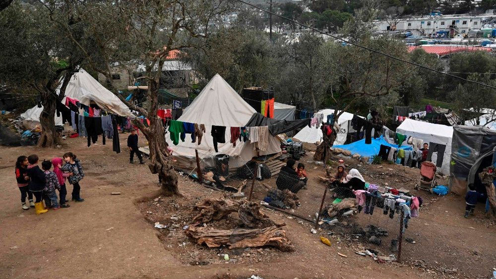

27.09.2020
Fire in refugee camp Moria

The refugee camp Moria was build 2015 for 2.800 refugees during the refugee crisis in europe.
Its located on the greek island Lesbos close to Turkey.
In March 2020, 20.000 refugees were in the camp.
On 7. of August 12.600 people were in the camp. Its way to overcrowded. They had average 3,6 squaremeters per person. But the UN
suggests 45 squaremeters per person for storage room, showers, toilets, sleeping space and walking space.
Because of that they have big water and health problems. Not good, specially in times of Corona.
Corona could spread very easily and fast in Moria. So activist in Germany placed on 7. of August 13.000 chairs in front of the Reichstag to demonstrate that
Germany should recieve refugees from Moria. Every chair stand for 1 refugee. The situation is not human like in Moria and Germany can help them.
Germany is a strong nation. Some cities and municipalities want to recieve refugees. But the minister of the Interior "Horst Seehofer" doesnt allow them to
recieve refugees. He wants an european solution in refugee politics. Germany recieves the most refugees and the other countries, specially the "Visegrad" countries refuse
to recieve refugees. We still have no system to split up the refugees fair on other EU countries. I am disappointed of the EU, because so many countries dont want to recieve
refugees or dont want to have a fair system. In Austria are "Die Grünen" in the goverment, they are left and in Germany they want to recieve a lot of refugees, but not in
Austria, they are weird. One day after the demonstration 17 Corona cases were in Moria. The people in Moria were angry and burnt their houses. The whole camp burnt down.
12.600 refugees homeless. Greek had to act and send ships, police and began to build a new camp. But the EU wasnt really acting. Some countries send material to help.
Later Germany and other nations decided to recieve 400 refugees in total, Germany 150 of that 400. 400 of 12.600, thats not much help.
German citizens were shocked and wanted to recieve more refugees so Angela Merkel and Horst Seehoder decided to recieve 1553 refugees some also from other camps.
"Die Linke" even wanted to recieve all refugees and the "AfD" wanted to recieve no refugees because they think they would be criminals. Typical right politicians with no brain in my opinion.
Later Italy also decided to recieve 300 refugees. The refugees were more then a week homeless, without water or food. And most of the EU countries just dont care.
Now almost 3 weeks after the fire, everyone already forgot about them. We need to help refugees and we need an european solution in migration politics.